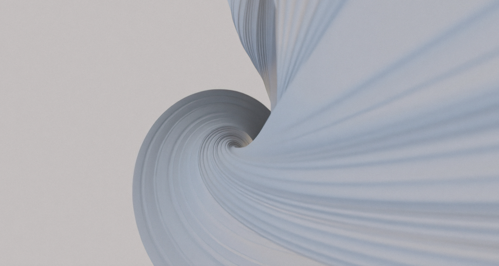
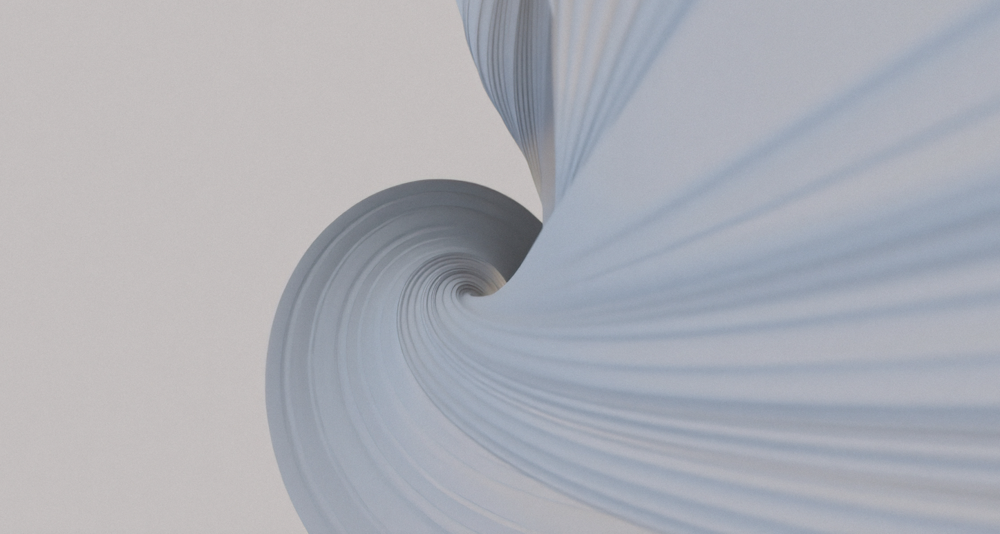
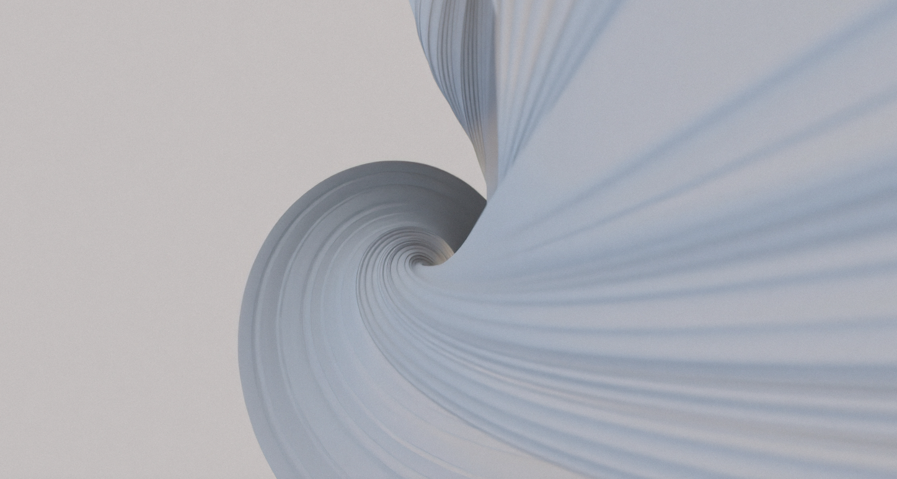
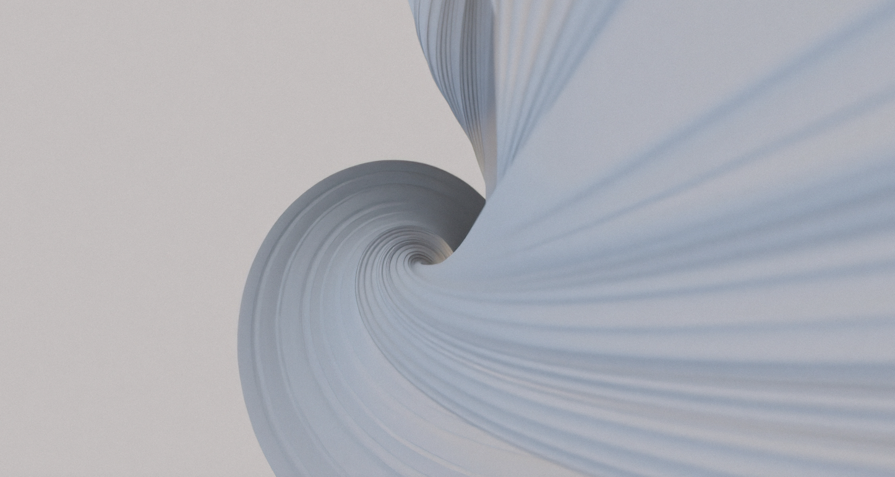

Mit navn er Jessica, jeg er 25 år, kommer fra
København og er pt. i gang med mit første semester
som multimediedesigner på Zealand i Køge.
Jeg er en engageret, ansvarlig og målretter person med
masser af gåpåmod, og jeg er ikke bange for at springe
ud i nye udfordringer.
Jeg brænder for at arbejde med web design og art directing.

I dette projekt var opgaven at udvikle et koncept og en digital løsning til salg af rejser ud i rummet i led af Danmarks nationale rumraket program. I mit team endte vi med at lave en hjemmeside for en eksklusiv festival i rummet, som skulle være den største og fedeste festival i universet. Min opgave har primært været at idéudvikle og konceptudvikle, og så har jeg stået for siden der fortæller noget om hvad Space Jam egentlig er. Vi valgte at gå med en sort farve i toppen som langsomt bliver lilla, da det er nogle farver vi forbinder med rummet og for at give siden lidt liv, så den ikke bare er ensfarvet. Da det var mit første projekt, er siden også sat ret simpelt op med både billede og tekst i midten af skærmen. Den hvide skrift er blevet valgt for at skabe noget kontrast til den mørke baggrund.
I første del af dette projekt skulle vi være iværksættere og udvikle en idé. Vores ide tager udgangspunkt i, hvordan man kan købe genbrugsvarer, hvor selve transporten bliver gjort grøn indenfor storbyer, men også hvor transporten bliver hurtigere og billigere. Vi fandt på appen GoCycle, som er en platform hvor man kan sælge, købe og transportere genbrugstøj ved hjælp af cykeltransport. I anden del af projektet var fokus på SoME og branding af vores produkt, hvor vi skulle udarbejde et koncept til online markedsføring og salg af produktet via sociale medier. Min opgave har primært været at stå for idéudvikling, design af hjemmesiden og at lave en content plan for vores sociale medier. Vi har valgt den grønne farve fordi vi med vores koncept vil fokusere på bæredygtighed og derfor er grøn en passende farve, vi har dog valgt at gøre den lidt afdæmpet, da det fungerer bedre til vores målgruppe. Derudover har vi selvfølgelig haft stort fokus på brugervenlighed på appen.
I dette projekt har jeg arbejdet med hele processen bag
det at skabe en video fra idéudvikling til færdigt produkt.
Temaet for projektet var at lave en “how-to” video, som endte ud i,
at vise hvordan man laver en julestjerne.
Jeg har hovedsagligt stået for at redigere videoen og for at
sætte “scenen” op. Det var vigtigt at for mig og mit team,
at skabe en hyggelig stemning og vi valgte derfor at placere nogle
rekvisitter som vi forbinder med hygge og jul, derudover var det også
vigtigt for os at lyset havde noget varme for også at skabe hygge.
Vi har valgt kun at have rekvisitter i toppen af billedet ude i siderne
for at der ikke er for mange forstyrrende elementer dér hvor man skal
koncentrere sig om hvad der sker.